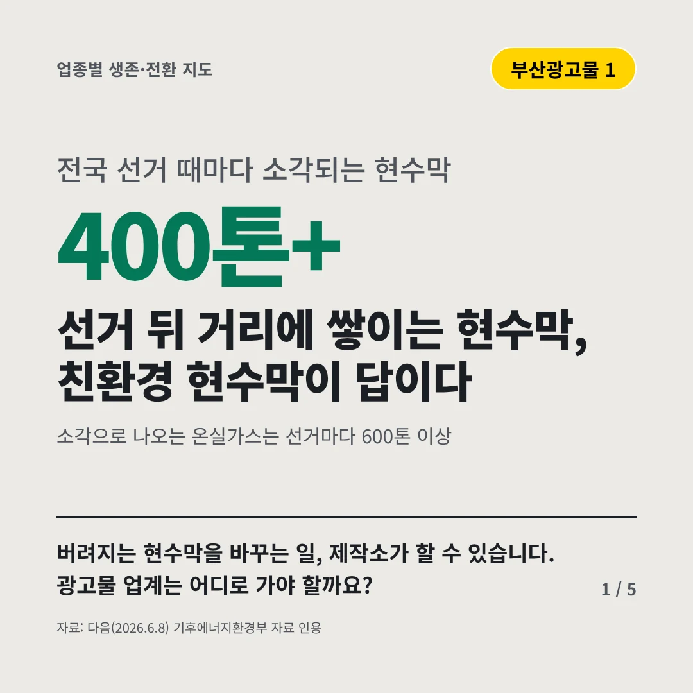
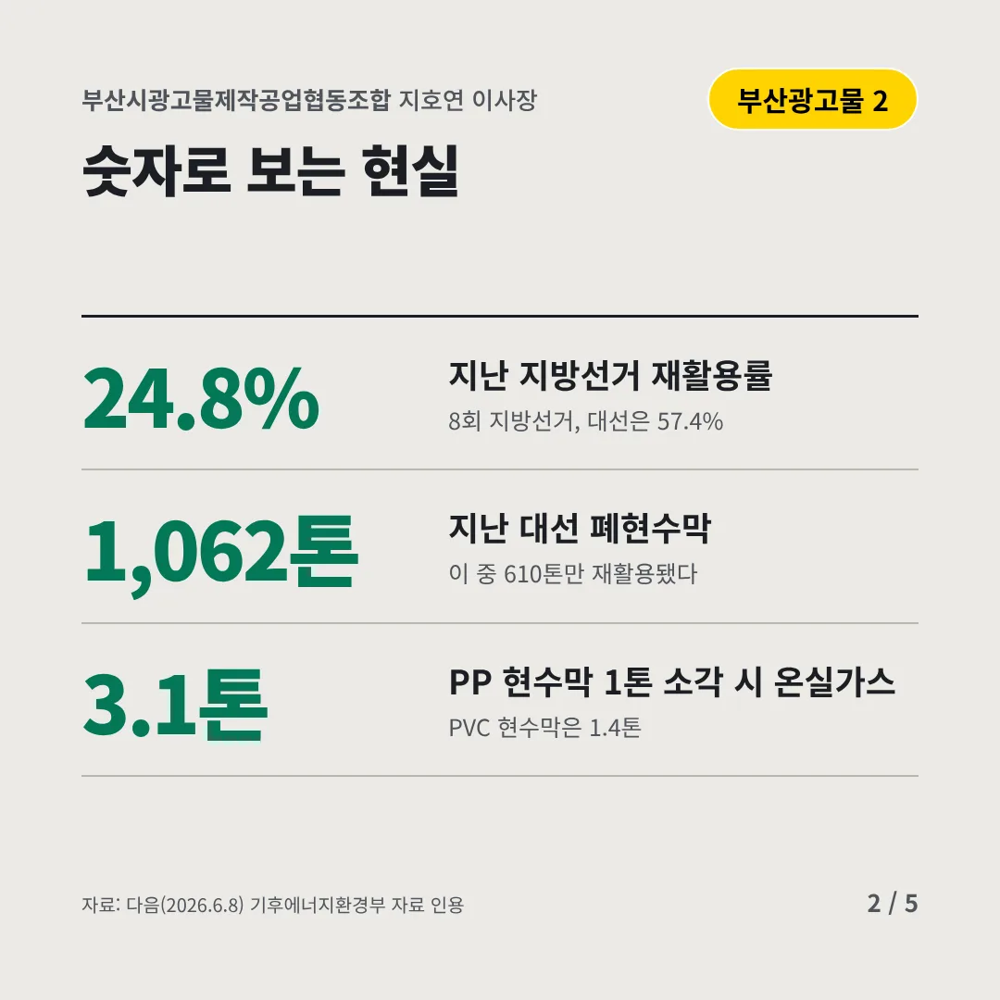
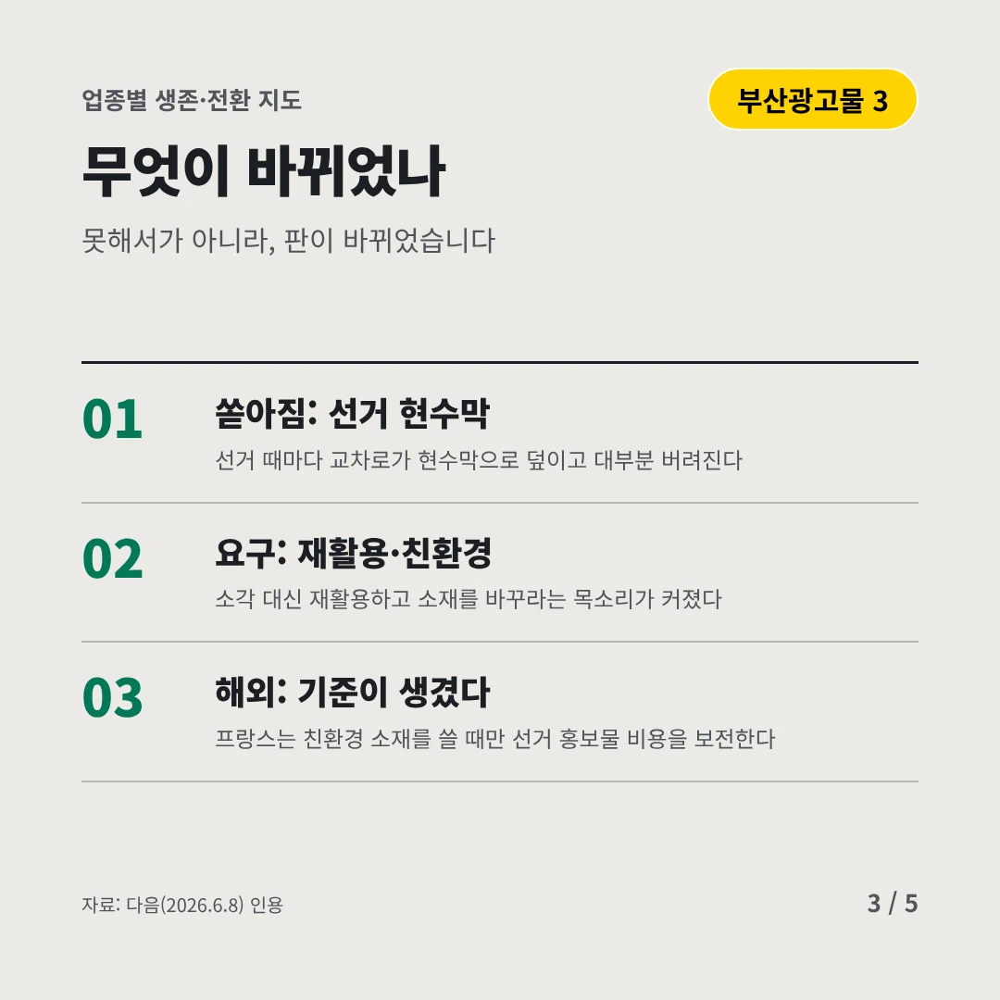
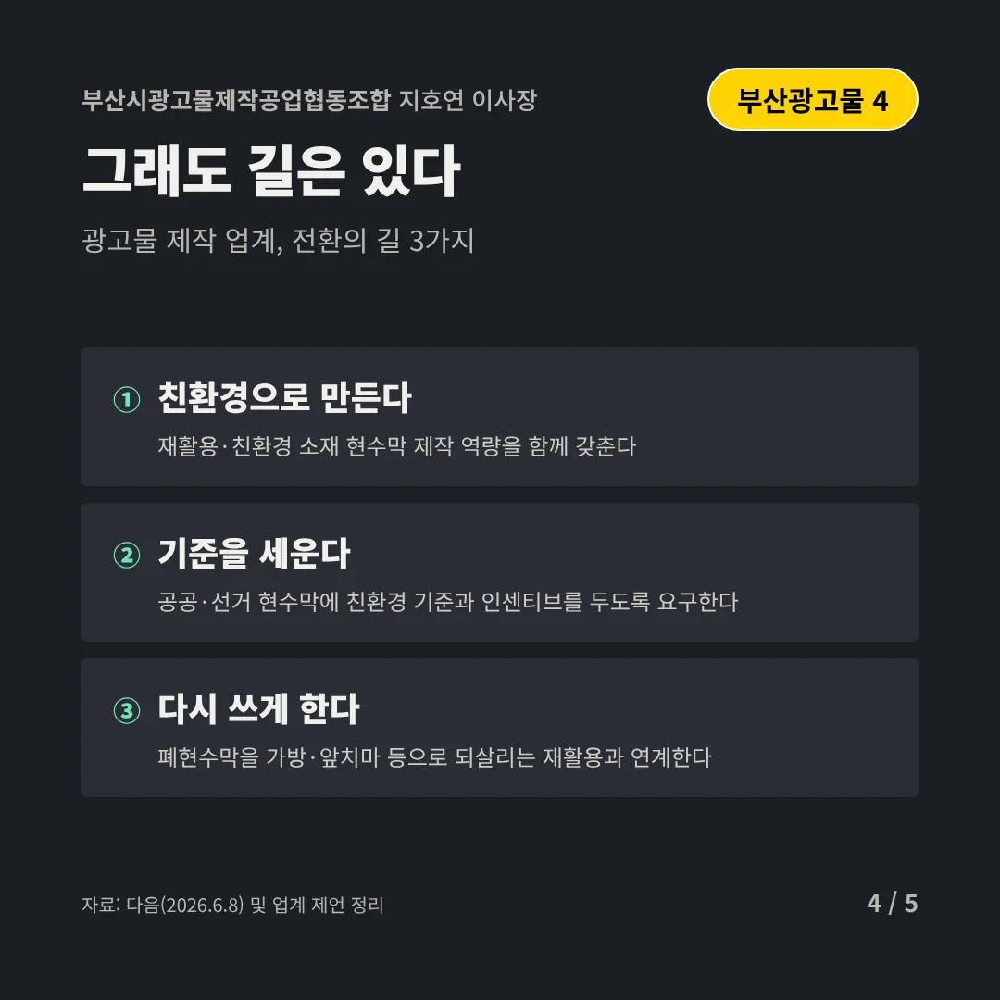
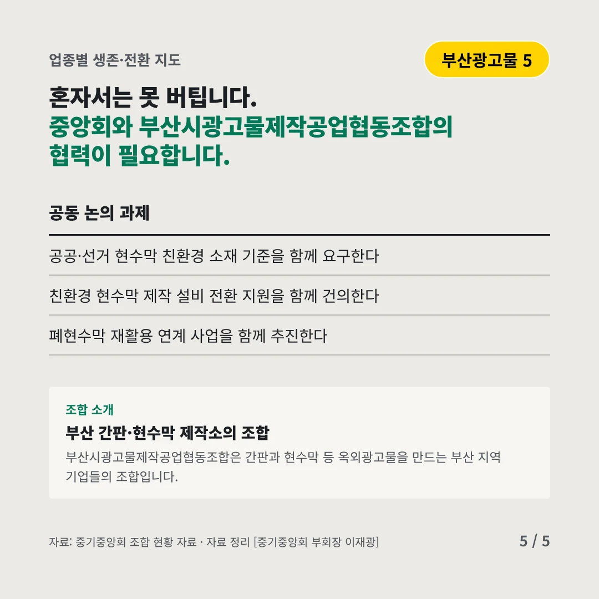
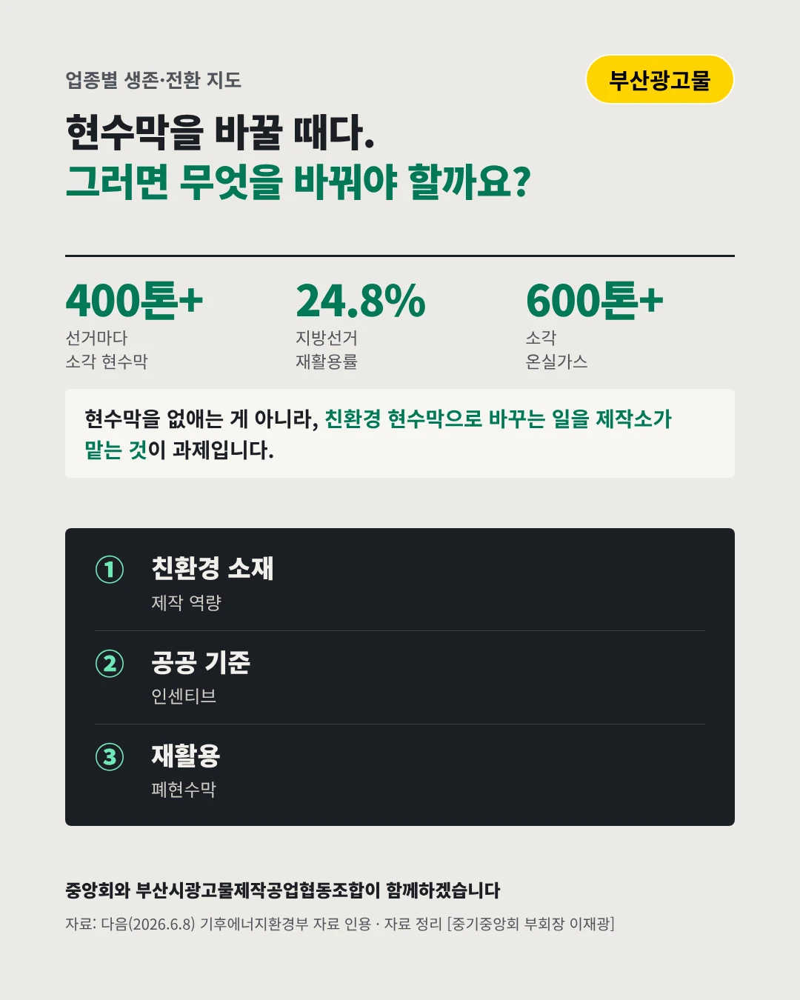

부산시광고물제작공업협동조합
선거 뒤 거리에 쌓이는 현수막, 친환경 현수막이 답이다
400톤+ 전국 선거 때마다 소각되는 현수막






버려지는 현수막을 바꾸는 일, 제작소가 할 수 있습니다. 광고물 업계는 어디로 가야 할까요?
숫자로 보는 현실
- 24.8%지난 지방선거 재활용률8회 지방선거, 대선은 57.4%
- 1,062톤지난 대선 폐현수막이 중 610톤만 재활용됐다
- 3.1톤PP 현수막 1톤 소각 시 온실가스PVC 현수막은 1.4톤
무엇이 바뀌었나
- 쏟아짐: 선거 현수막선거 때마다 교차로가 현수막으로 덮이고 대부분 버려진다
- 요구: 재활용·친환경소각 대신 재활용하고 소재를 바꾸라는 목소리가 커졌다
- 해외: 기준이 생겼다프랑스는 친환경 소재를 쓸 때만 선거 홍보물 비용을 보전한다
그래도 길은 있다
- 친환경으로 만든다재활용·친환경 소재 현수막 제작 역량을 함께 갖춘다
- 기준을 세운다공공·선거 현수막에 친환경 기준과 인센티브를 두도록 요구한다
- 다시 쓰게 한다폐현수막을 가방·앞치마 등으로 되살리는 재활용과 연계한다
한 장 요약

조합 소개
부산시광고물제작공업협동조합은 간판과 현수막 등 옥외광고물을 만드는 부산 지역 기업들의 조합입니다.
자료: 다음(2026.6.8)